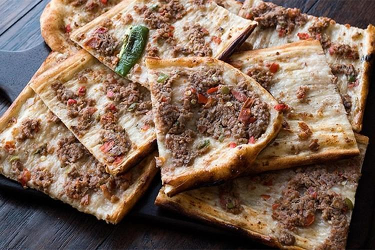

Kastamonu, binlerce yıllık köklü bir kültür geçmişine sahiptir. Karadeniz’de bulunan şehir, farklı medeniyetlerden de etkilendiği için zengin bir yemek kültürüne sahiptir. Bölgede yapılan araştırmalar neticesinde yöreye özgü Anadolu’da ismi bilinmeyen yaklaşık 500 yemek olduğu sonucuna varılmıştır. Bu da Kastamonu mutfağının zengin olduğunun bir göstergesidir. Genel olarak et yemekleri, hamur işinden oluşan yemekler ve değişik içeriğe sahip çorbalar Kastamonu mutfağının temelini oluşturmaktadır. Kastamonu Türkiye’de şekercilik ve meyvecilik alanında da kendine ün yapmış iller arasındadır. Kastamonu’da yetişen elma, Tosya’da tarımı yapılan pirinç, İnebolu’da toplanan kestane, Taşköprü’de üretilen sarımsak Kastamonu’nun yerel yemeklerinde özellikle tercih edilmektedir. Kastamonu’da üretilen sebze, meyve ve bitkiler, yörenin kendine ait mutfak ve yemek geleneğini oluşturan temel taşlardır.
Etli Ekmek Kastamonu’nun meşhur lezzetlerindendir. İnce hamur üzerine kıyma harç sürülmekte ve sacda pişirilmektedir. Kastamonu’da her evde ve genellikle her lokantada Etli Ekmek bulmak mümkündür. Hamur işi ve etli yemek karışımı olan lezzet Konya’nın etli ekmeğinden oldukça farklı tat ve görüntüye sahiptir.
Banduma yemeği kimi yerlerde bandıma kimi yerlerde de ıslama olarak adlandırılmaktadır. Tavuk eti veya hindi eti kullanılarak yapılan bu yöresel tat hem hafif hem de doyurucu bir yemektir. Köy yufkası ile yapıldığında daha lezzetli olmaktadır. Arasına bol bol Kastamonu’da yetişen cevizlerden konularak yapılan yemeğin yapım aşaması biraz uğraştırıcıdır. Penbe Han’da yapılan yöresel tatların yanı sıra bandumayı da deneyebilirsiniz.
Kastamonu’nun yöresel tatları arasında kuyu kebabı gelmektedir. Kastamonu’da küçükbaş hayvan olan kuzunun çok fazla tercih edilmesi yemek kültürüne de etki etmiştir. Bir gün öncesinden dinlendirilmiş olan kuzu etiyle yapılan kuyu kebabı, meşakkatli yapım aşamasına sahip bir lezzettir. Kuyu kebabının suyu ile yapılan pirinç pilavı, servis yapılırken tercih edilmektedir. Kırcılar Kuyu Kebabı Lokantası, kuyu kebabı yemek isteyenler için önerilen bir adrestir.
Paça, Kastamonu yöresinde en çok tüketilen lezzetler arasında yer almaktadır. Patates ile yapılan bu yemek tencerede veya fırında pişirilmektedir. Kıymalı, kelleli ve pirinçli olarak farklı çeşitleri vardır. Üstüne maydanoz serpilerek servis edilen yöresel lezzetin yapım aşaması kolay olduğundan dolayı yöre halkının sıklıkla yaptığı yemektir.
İncir Dolması kuru incirle yapılan bir tatlı türüdür. Suda pişirilen kuru incirlere şerbet dökülmekte ve içerisine ceviz ve kaymak konularak hazırlanmaktadır. İsteğe ve mevsime göre kaymak yerine dondurma da konulabilmektedir. Lezzet bombası olarak anılan bir tatlıdır.
Bu lezzet, Kastamonu’nun meşhur siyez bulgurundan yapılmaktadır. İçerisinde domates, toz zerdeçal ve sarımsak bulunan lezzet genellikle yöre halkı tarafından yapılmaktadır. Özellikle yaz mevsiminde doğal domatesin yetiştiği zamanlarda yapılan bir yemek türüdür.
Ekşili pilav Kastamonu’da hamur işi ve etli yemeklerin dışında tadına bakabileceğiniz yöresel lezzetlerdendir. İnce bulgur ve mercimek ile pişirilen yöresel yemeğin içerisinde soğan ve tereyağı da bulunmaktadır. Ekşili pilav kısık ateşte uzun süre boyunca piştiği takdirde güzel bir lezzet ortaya koymaktadır. Genellikle yöresel yemeklerin yapıldığı mekanlarda bulunmaktadır.
Kastamonu’da kemik suyu, kavrulmuş kıyma ve Taşköprü sarımsağı ile yapılan simit tiridi, yöresel tatlar arasındadır. İçerisinde bol miktarda tereyağı konulduğu için biraz ağır bir yemektir. Yüz yıllardan bu yana tüketilen simit tiridi, Türkiye’nin birçok yerinde Kastamonu yöresel yemeği adı altında yapılıp satılmaktadır. Kastamonu’da ise herhangi bir adı veya markası bulunmayan, Nasrullah Camii yanındaki Yılanlı Sokak’ta bulunan asırlık lokantada yenilmesi tavsiye edilmektedir.
Kastamonu’nun Devrekani ilçesine özgü olan bu yerel tatlı, diğer yerlerde lokma tatlısı olarak bilinmektedir. Hamurlu ve şerbetli olan cırık tatlısının lezzetini arttırmak için çikolata veya marmelat ile servis yapılabilmektedir. Osmanlı Saray Mutfağının lezzeti olan ve saray lokması olarak bilinen tatlı, Kastamonulular tarafından ‘cırk, cırk’ diye ses çıkardığı için cırık tatlısı adını almıştır. Restoranlarda yemeklerden sonra ikram edilmekte olan tatlı birçok pastanede satılmaktadır.
Mıklama ıspanak veya tercihe göre kıymalı da yapılabilen bol proteinli ve doyurucu lezzetlerden biridir. Hazırlanan malzemelerin kavrulmasının ardından üzerine yumurta kırılmakta ve pişirilerek sıcak bir şekilde servis edilmektedir. Evlerde oldukça çok tüketilen pratik bir yöresel lezzettir.
Üryani eriği yalnızca Kastamonu’da yetişen bir meyve ağacıdır. Ağustos ayının sonunda toplanan eriğin dış kabuğu soyularak yaz güneşinde kurumaya bırakılmaktadır. Üryani eriğinden de sade ve hafif bir hoşaf yapılmaktadır. Genellikle Ramazan Ayı’nda tercih edilen bu hoşafın yapım aşaması kolay olduğu için çokça tüketilmektedir. Hoşaf ayrıca mide ve bağırsak sorunu yaşayanlar için ayrıca şifa niyetine kullanılabilmektedir.